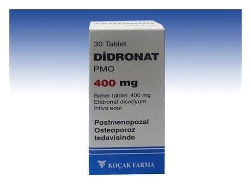

Didronat 400 mg Tablet, 30 Adet

Ne için kullanılır
KT · Bölüm 12. DİDRONAT kullanmadan önce dikkat edilmesi gerekenler 3. DİDRONAT nasıl kullanılır? 4. Olası yan etkiler nelerdir? 5. DİDRONAT’ın saklanması
Başlıkları yer almaktadır.
1.DİDRONAT nedir ve ne için kullanılır? • DİDRONAT, etidronat disodyum içeren bir tablettir. Etidronat disodyum bifosfonat olarak isimlendirilen hormonal olmayan bir ilaç grubunun içinde yer alır. • DİDRONAT, beyaz renkli, bir yüzü çentikli, düz, yuvarlak tabletler halinde 30 tabletlik amber renkli cam şişelerde piyasaya verilmiştir. • DİDRONAT, aşağıda belirtilen durumların tedavisinde kullanılır. - Osteoporoza yakalanma riski olan menopoz sonrası dönemdeki kadınlarda kemik kaybını önlemede ve mevcut osteoporoz (kemik kütlesinin azaldığı ve kemik kırılganlığının artmış olduğu durum) tedavisinde, aynı zamanda kortikosteroid tedavisi kullanımından dolayı meydana gelen osteoporozu önlemede ve tedavisinde, - Yetişkinlerde ağrılı veya ağrısız kemiklerde büyüme ile karakterize Paget hastalığının Bu ilacı kullanmaya başlamadan önce bu KULLANMA TALİMATINI dikkatlice okuyunuz, çünkü sizin için önemli bilgiler içermektedir. • Bu kullanma talimatını saklayınız. Daha sonra tekrar okumaya ihtiyaç duyabilirsiniz. • Eğer ilave sorularınız olursa, lütfen doktorunuza veya eczacınıza danışınız. • Bu ilaç kişisel olarak sizin için reçete edilmiştir, başkalarına vermeyiniz. • Bu ilacın kullanımı sırasında, doktora veya hastaneye gittiğinizde doktorunuza bu ilacı kullandığınızı söyleyiniz. • Bu talimatta yazılanlara aynen uyunuz. İlaç hakkında size önerilen dozun dışında yüksek veya düşük doz kullanmayınız.
tedavisinde, - Kalça ekleminin cerrahi yolla yeniden şekillendirilmesi veya oluşturulması ameliyatı, belkemiği yaralanmaları, kafa travmaları ve yanık sonrası gelişen normal dışı kemik oluşumu, - Maligniteyle ilişkili hiperkalsemi (kandaki kalsiyum miktarının fazla olması) tedavisinin sürdürülmesinde